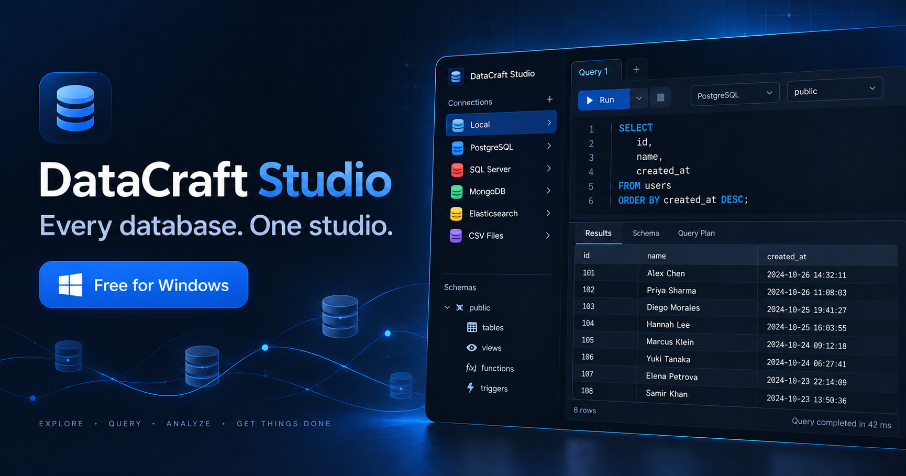
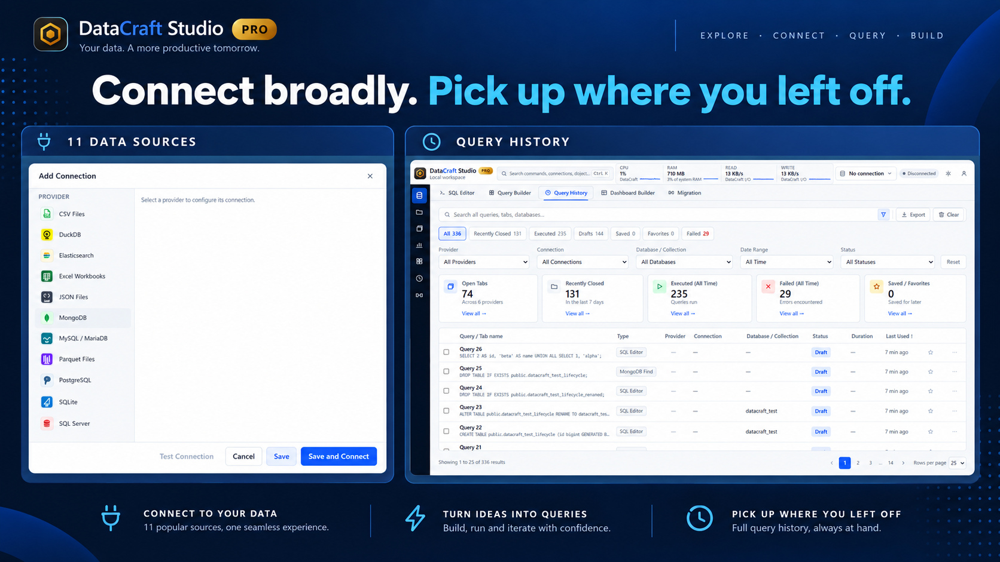
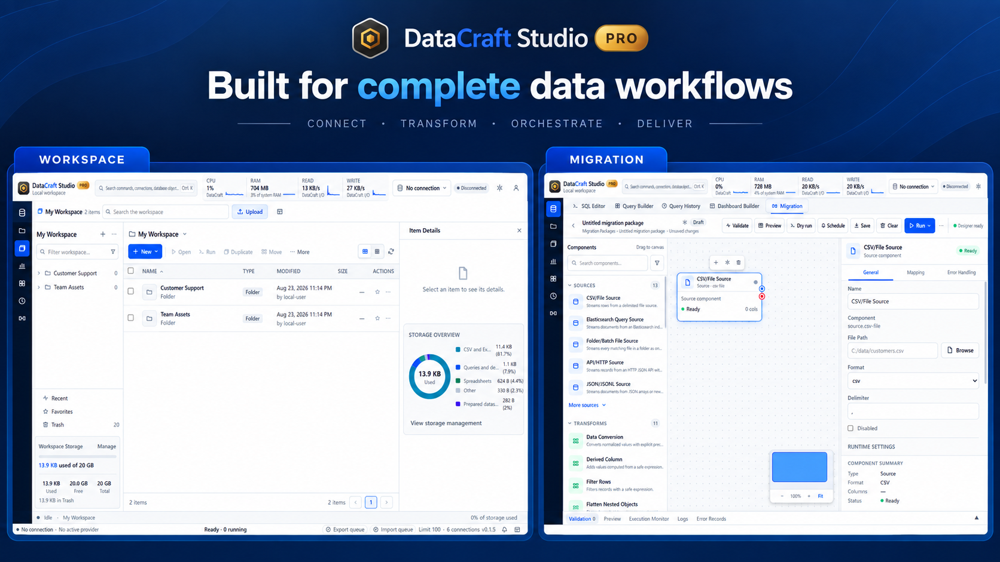
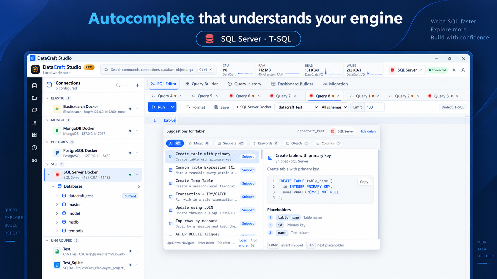
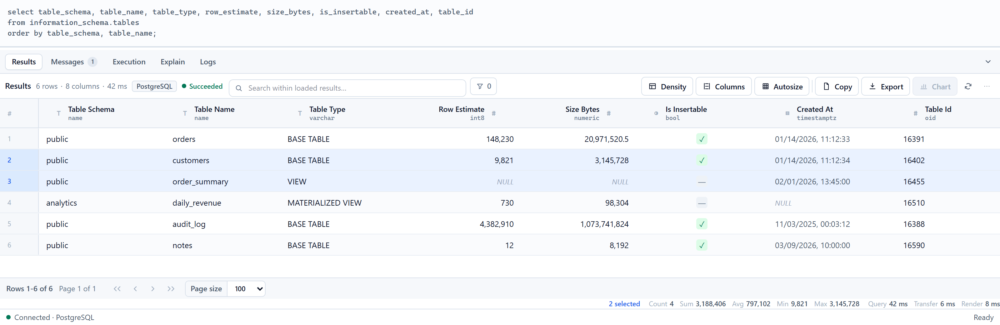
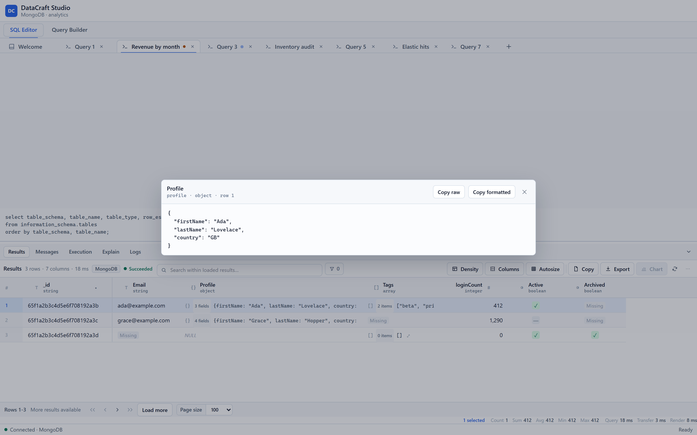

Query databases, document stores, search engines, spreadsheets and local files through one native interface—then move into complete Pro workflows when the job gets bigger.

The real Free and Pro editions—one familiar workspace, with advanced workflows when you need them.
Relational, document, search, analytical, spreadsheet and file sources all enter through the same clear workflow.
These views come from DataCraft Studio 0.1.5 and show the actual product surfaces users work in.


It's not just a longer feature list. The architecture is different, and you'll see that within five minutes.
DataCraft covers SQL, NoSQL, analytical engines, spreadsheets and local files in one provider-aware workspace.
Suggestions come from the live schema, not a word list: Postgres columns with native types and alias scope, SQL Server procedures, MongoDB fields and operators, Elasticsearch clauses.
A Rust core with a native window. It starts like a desktop app, uses little memory, and doesn't need Java installed.
Download it and it works. You don't sign up and no usage data is collected. Passwords stay in Windows Credential Manager.
Each engine declares what it can do, and the interface is built from that declaration. If an engine can't do something, you won't see the control. No clicking a button just to get an error.
The installers include the Visual C++ runtime and set up WebView2 if it's missing. Download, install, connect.
Every screenshot on this page is the real application.
Completion follows the active connection and dialect—not a generic word list. The editor keeps rich, relevant suggestions within reach while you type.

Rows from Postgres, documents from MongoDB, hits from Elasticsearch and lines from a CSV file all land in the same grid, with the same controls.

Objects and arrays show inline with their size, so you can scan a collection at a glance. Click one to open it as formatted JSON.

Free is a complete database studio for one developer on their own machine. Pro adds heavier tools for bigger workflows.
Forever. No trial clock, no account.
Everything in Free, plus the heavy tools.
Every build is published on GitHub Releases with SHA-256 checksums, so you can check exactly what you installed.
Windows 10 or 11, 64-bit. The portable build needs the Microsoft WebView2 runtime, which Windows 11 and up-to-date Windows 10 already include. macOS and Linux builds are not published yet.
Yes. It has no time limit, no connection limit and no account. All supported data sources are included, because a free build that locks out your data isn't much use.
No. There is no telemetry and nothing to sign into. The free edition only connects to the data sources you add.
In Windows Credential Manager. They are never written to connection profiles or log files.
Pro will unlock with a signed licence key you paste into Settings. It works offline and on air-gapped machines, with no login. Installing Pro over Free upgrades in place and keeps your settings.
SmartScreen can warn about software from a new publisher. Check the file's SHA-256 against SHA256SUMS.txt on the release page, then choose More info → Run anyway.
No. DataCraft Studio is free to use but closed source. The GitHub repository publishes releases and documentation, and hosts the issue tracker.
Download DataCraft Studio and work with all eleven source types in one window.
Download for Windows